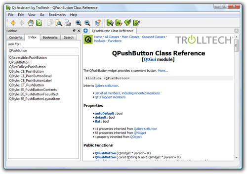
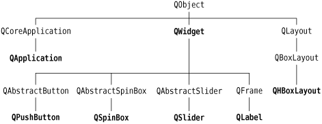

|
|
Qt's reference documentation is an essential tool for any Qt developer, since it covers every class and function in Qt. This book makes use of many Qt classes and functions, but it does not cover all of them, nor does it provide every detail of those that are mentioned. To get the most benefit from Qt, you should familiarize yourself with the Qt reference documentation as quickly as possible.
The documentation is available in HTML format in Qt's doc/html directory and can be read using any web browser. You can also use Qt Assistant, the Qt help browser, which has powerful searching and indexing features that make it quicker and easier to use than a web browser.
To launch Qt Assistant, click Qt by Trolltech v4.x.y|Assistant in the Start menu on Windows, type assistant on the command line on Unix, or double-click Assistant in the Mac OS X Finder. The links in the "API Reference" section on the home page provide different ways of navigating Qt's classes. The "All Classes" page lists every class in Qt's API. The "Main Classes" page lists only the most commonly used Qt classes. As an exercise, you might want to look up the classes and functions that we have used in this chapter.

Note that inherited functions are documented in the base class; for example, QPushButton has no show() function of its own, but it inherits one from QWidget. Figure 1.9 shows how the classes we have seen so far relate to each other.

The reference documentation for the current version of Qt and for some earlier versions is available online at http://doc.trolltech.com/. This site also has selected articles from Qt Quarterly, the Qt programmers' newsletter sent to all commercial licensees.
This chapter introduced the key concepts of signal–slot connections and layouts. It also began to reveal Qt's consistent and fully object-oriented approach to the construction and use of widgets. If you browse through Qt's documentation, you will find a uniformity of approach that makes it straightforward to learn how to use new widgets, and you will also find that Qt's carefully chosen names for functions, parameters, enums, and so on, make programming in Qt surprisingly pleasant and easy.
The following chapters of Part I build on the fundamentals covered here, showing how to create complete GUI applications with menus, toolbars, document windows, a status bar, and dialogs, along with the underlying functionality to read, process, and write files.
|
|
| Converted from CHM to HTML with chm2web Pro 2.85 (unicode) |